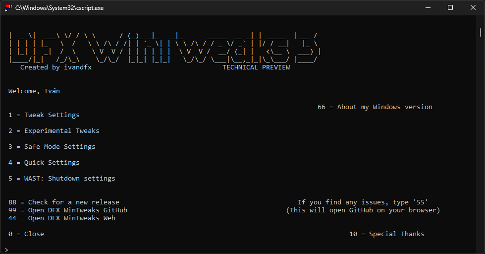

DFX WinTweaks | The Renaming
DFX Tweaker is being renamed, and something more - May 28, 2023
I will go straight to the point, the name DFX Tweaker is not a very Windows-like script, if you know what I mean, so...
In order to make DFX Tweaker more accessible and findable on the interwebs for Windows users, I'm going to rename it to DFX WinTweaks (also abreviated as DFX WT), so it can give you a better idea of the purpose of this project and for what OS is designed.
In addition to this, DFX WinTweaks NT6 (it's going to be renamed too) will be updated on the 2.X version branch permanently while it lasts, and DFX WinTweaks will be moved to 3.X version branch and up from now on.
Due to this change, older versions of DFX Tweaker that don't have the DFX Tweaker Web option will not be able to go to the new repository automatically, but every version of DFX Tweaker that have that option will be redirected to the new website, I mean, it's minor stuff, but it's worth to notice it
(Also, you shouldn't use older versions of DFX Tweaker/DFX WinTweaks)
And this is all for now, check this project on the next weeks to be involved, see ya!
